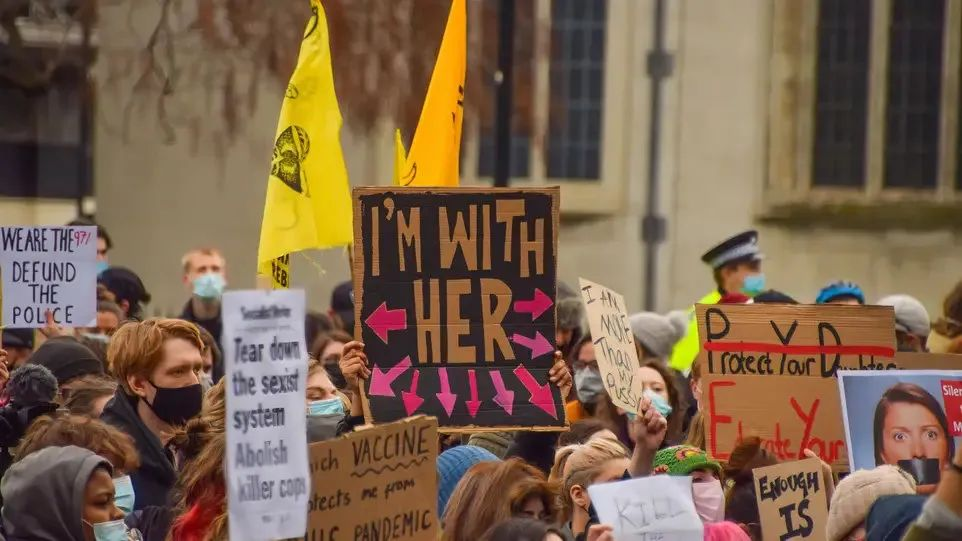
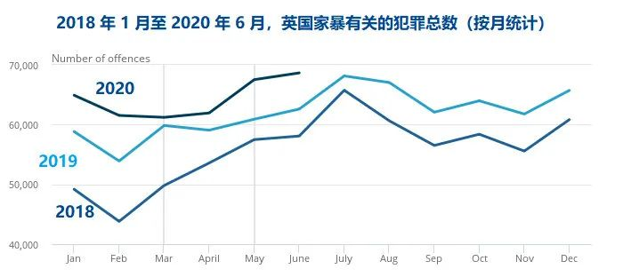

翻译社2021年11月|国际反家暴月：我们还有多长的路要走

德国：绝大部分家暴致女性死亡案件不算作谋杀，量刑过轻
今年3月，33岁的英国人Sarah在回家路上突然失踪，一个48岁的男警察杀害了她。9月，又一名英国女性Sabina在与朋友聚会的路上被杀害，嫌疑犯是3个英国男性。在这两起针对女性的谋杀案中间的不到200天时间里，英国男性们共杀死了77名女性。这些谋杀案在英国被归类为“针对女性群体的犯罪femicide”。
然而，并没有人知道德国究竟有多少女性死于针对女性群体的犯罪，因为这一案件类型并不存在。德国犯罪学、安全和法律专家，心理学家GundaWoessner解释说，在德国没有对针对女性暴力的统计，也并没有“谋杀女性（femicide）”这一罪名。
目前德国联邦刑事警署仅统计发生在亲密关系中的暴力案件，但这一统计方式并不能覆盖所有针对女性的暴力案件（比如针对Sarah和Sabina的谋杀案）。根据这种统计，德国每年有约100个男性杀害他们的女性亲友。
不仅如此，在德国，绝大部分此类杀害女性案件都以“伤害致死Totschlag”罪名起诉（量刑5-15年），而非“谋杀Mord”（量刑无期）。在2008年的一起案件中，德国法院明确给出了亲密关系谋杀中的适用罪名条件：如果罪犯的动机是受害者选择结束亲密关系，因而致受害者死亡的行为实际导致了罪犯“失去了他并不想失去的（东西）”，那么罪名应当为量刑5-15年的“伤害致死”，而不是无期徒刑的“谋杀”。
值得注意的是，即使在亲密关系谋杀中，在已有明确适用条件的情况下，德国法院在实际执行时也并不一致。在德国穆斯林社群中相对较常见的“荣誉谋杀”案件，就更容易被定性为“谋杀”并以无期量刑。
在Sarah谋杀案之后，德国也出现了对案件重新分类的讨论。内务部长和法律部长都表示，刑事犯罪统计数据应当更准确地反映厌女/仇女的犯罪。如果“谋杀女性”的罪名得以入法，亲密关系中的致死案件也将适用无期的量刑。
但32岁的法官，德国女法官协会主席LeonieSteinl却有不同观点。她认为，德国法律本身并无问题，问题在于以男性思维主导的司法系统，仍然将受害女性定义为罪犯的“所有物”。所以不需要单独设立“谋杀女性”的罪名，而应该保证在实际判决中正确且一致地适用罪名和量刑。
各种科学研究都表明，男性的暴力倾向明显高于女性，这是出现在所有文化中的一种全球普遍现象。Woessner给出的原因很明确：因为在对男性的教育中，暴力是一种男性力量的表现。男性使用暴力，会得到传统男权社会的肯定。
而德国媒体在报道针对女性的暴力时，经常在标题中使用“家庭纠纷”、“亲密关系犯罪”，“荣誉谋杀”一类词语，这实际上是对受害女性的指责。无论犯罪的男性与被害人是否相识，出现这类针对女性的严重暴力，其根本原因都是厌女。这种倾向，尤其是在网络中毫无遮掩的仇女言论，应当引起整个社会的警惕。
Woessner提出，在英国，法国和西班牙，女性都已经组织起来，为了反对针对女性的暴力而上街游行。但德国缺少这种组织，目前的行动仅限于学术讨论。

（来源：RND）
英国：疫情居家隔离造成家暴案件数量大幅增加
英国在2020年3月开始采取居家隔离措施，国家统计局报告称到4月到6月期间，家庭虐待案件增加12%，国家家暴热线电话接线次数增加65%。据研究来自现任伴侣家暴增加8.1%，来自家庭成员家暴增加17.1%，来自前任伴侣虐待减少11.4%。开始封锁的前三周，英国发生16起虐待妇女和儿童的恶性家暴案件，近十年来都没有哪一年比2020年更多。可见居家隔离期间的家暴案件更加复杂严重，暴力程度和强制控制程度更高。同时中法两国疫情隔离期间的经验也告诉我们，家暴是疫情期间的“流行病”。

（来源：英国国家统计局）
针对这些新状况，英国内政大臣在4月宣布拨款200万英镑（约1700万人民币）用于家暴支持热线以及提供在线帮助。随后的5月份，政府为反家暴事务提供2500万英镑，其中1000万用于为受害者提供安全居住环境。同时在网络上发起“#YouAreNotAlone”话题，表明警察和相关专家在疫情期间仍提供援助。
2021年1月，英国已经开始第三次居家隔离，政府和药店合作推出“AskforANI”计划（ANI：ActionNeededImmediately需要立即采取行动），参与项目的药店将展示相关材料，让求助者知晓有接受过专业训练的援助人员可以提供安全私密空间及获得其他帮助，以及必要时可选择报警。
美国：男性杀害女性伴侣人数，达到驻阿富汗和伊拉克美军的死亡人数的近两倍
纽约女子GabbyPetito失踪遇害案近日吸引了全美关注。9月19日，Petito的遗体在大提顿国家森林公园一处露营地被发现，法医认定此案系他杀。
不少网友猜测Pepito是惨遭男友Laundrie毒手，但Laundrie对网上的责问始终没有一丝回应。网友的怀疑并非空穴来风，8月12日在犹他州警方接到一起报案，目击者表示看到一名男子袭击了同行的女生，警方赶到后录下了视频，视频里的Petito哭得异常绝望。她表示自己和未婚夫在旅途上争执，压力很大，一整天都在吵架。但随后两人和好说不会指控对方。于是警方让两人分开居住一晚，便不再追究，只把视频证据保留了下来。随着最新的时间线证据被补充上，网友发现8月12日那天之后，Laundrie的账号就再也没更新过合影和Petito的照片，只发布了他一个人的照片。由此可推测，如果Petito真的遇害，可能就在这段时间和这个范围里。但真相永远无法还原，因为在回避警察问话一段时间后，Laundrie被警方发现已经死亡。
媒体对该案件的持续报道，使得人们的注意力集中在美国蔓延的家庭暴力和虐待上。虽然Laundrie从未因Petito之死而受到指控，只是被指名为该案的嫌疑人。但这一案件提出了一些重要且持续未完的问题，即Petito可能遭受的家庭虐待，以及如果有可能，我们本可以做些什么来阻止她的死亡。
据美国司法部估计，每年有130万女性和83.5万男性遭受过伴侣的身体暴力。在美国，每9秒就有一名男性殴打或攻击他的现任或前任女性伴侣。不仅女性，男性也可能成为家暴受害者。全美国有四分之一的男性受到亲密伴侣某种形式的身体暴力。
另一组统计数据更加令人震惊：2001年至2012年间，驻阿富汗和伊拉克美军的死亡人数为6488人。在同一时间段内，男性杀害的现任或前任女性伴侣人数为11766人，这几乎是在战争中死亡人数的两倍（《赫芬顿邮报》）。
Petito死后，美国有一批家庭暴力幸存者，转向在网络上互相提供支持并向大众传递警示信号。在看到8月12日警方拍下的那段视频后，家庭暴力幸存者Walters就隐约觉得自己知道发生了什么：Petito抬着自己的脸描述他们争执过程中男友抓着自己的方式，这对Walters来说是一个无比熟悉的警示信号。她在看这段视频时就非常确信Petito有被掐死的风险。2020年，Walters差点被她当时的丈夫掐死，不过她幸存了下来。她说“很多幸存者都有同样的直觉……就通过她的一句话‘他抓着我的脸’……许多幸存者都能感受到这是一个大大的红色预警。”后来Petito被警方发现确实是被勒死的。
在BuzzFeed新闻采访的五名遭受勒扼的幸存者中，几乎所有人都认为，如果8月份与Petito通话的警官知道如何识别某人是否有危险，她本可以获救。幸存者们从Petito的遭遇中看到了自己的影子，他们希望其他遭受家庭暴力的人能有更好的结果。现在，幸存者们在社交媒体上公开表示，缺乏对勒扼行为（Strangulation）的识别意识以及向警方报告的困难，在预防和干预家暴被勒致死方面留下了空白。
勒扼行为（Strangulation）通常是亲密伴侣杀人的前兆。根据美国国家司法研究所(NationalInstituteofJustice)发表的一项研究，那些伴侣曾试图勒死自己的人被谋杀的可能性是其他人的近10倍。
除了勒扼之外，枪击致死也是美国家庭暴力的主要呈现形式之一。在美国，每16个小时就有一名男性开枪打死他的前任或现任女性伴侣。美国东北大学(NortheasternUniversity)教授、犯罪学家詹姆斯•艾伦•福克斯(JamesAlanFox)根据TheCenterforInvestigativeReporting分析了美国联邦调查局(FBI)之前从未公布过的数据，这些数据显示，过去十年中，由亲密伴侣犯下的涉枪杀人案激增了58%。福克斯发现，新冠疫情对虐待受害者来说是一个特别致命的时期；与前一年相比，2020年亲密伴侣的涉枪杀人案惊人地上升了25%，达到近30年来的最高水平。在去年被亲密伴侣枪杀的受害者中，女性占三分之二以上。
（来源：rnd，德国联邦法律，南德早报，statista，英国国会图书馆，美国nationaldaycalendar，buzzfeed，reveal，nbc；翻译：Karen，村长，小庄）
部分图片来源于网络，侵权删除。